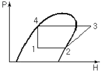
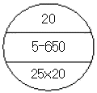

에너지관리산업기사 (2015-05-31 기출문제)
1과목: 열역학 및 연소관리
1. 통풍기를 크게 원심식과 축류식으로 구분할 때 축류식에서 주로 사용하는 풍량 조절 방식은?
- 회전수를 변화시켜 풍량을 조절한다.
- 댐퍼를 조절하여 풍량을 조절한다.
- 흡입 베인의 개도에 의해 풍량을 조절한다.
- 날개를 동익가변시켜 풍량을 조절한다.
(정답률: 82%)

2. 압력이 200kPa 인 이상기체 200kg이 있다. 온도를 일정하게 유지하면서 압력을 40kPa로 변화시켰다면 엔트로피 변화량은? (단, 기체상수는 0.287kJ/kgㆍK이다)
- 40.1kJ/K
- 52.8kJ/K
- 73.1kJ/K
- 92.4kJ/K
(정답률: 39%)
3. 기체의 가역 단열 압축에서 엔트로피는 어떻게 되는가?
- 감소한다.
- 증가한다.
- 변하지 않는다.
- 증가하다 감소한다.
(정답률: 69%)
4. 집진장치의 선택을 위한 고려사항으로 가장 거리가 먼 것은?
- 분진의 색상
- 설치장소
- 예상 집진효율
- 분진의 입자크기
(정답률: 93%)
5. 공기비(m)에 대한 설명으로 옳은 것은?
- 공기비가 크면 연소실 내의 연소온도는 높아진다.
- 공기비가 적으면 불완전연소의 가능성이 있어서 매연이 발생할 수 있다.
- 공기비가 크면 SO2, NO2등의 함량이 감소하여 장치의 부식이 줄어든다.
- 연료의 이론연소에 필요한 공기량을 실제 연소에 사용한 공기량으로 나눈 값이다.
(정답률: 74%)
6. 검출된 증기 압력이 설정된 압력에 이르면 연료공급을 차단하는 신호를 발생하는 발신기는?
- 압력 경보기
- 압력 발신기
- 압력 설정기
- 압력 제한기
(정답률: 86%)
7. 탄소 1kg을 완전 연소시키는데 필요한 산소량은 약 몇 kg 인가?
- 1.67
- 1.87
- 2.67
- 3.67
(정답률: 55%)
8. 카르노 사이클로 작동되는 기관이 250℃에서 300KJ의 열을 공급받아 25℃에서 방열했을 때의 일은 얼마인가?
- 30kJ
- 129kJ
- 171kJ
- 225kJ
(정답률: 54%)
9. 430K에서 500kJ의 열을 공급받아 300K에서 방열시키는 카르노사이클의 열효율과 일량으로 옳은 것은?
- 30.2%, 349kJ
- 30.2%, 151kJ
- 69.8%, 151kJ
- 69.8%, 349kJ
(정답률: 79%)
10. 피스톤-실린더 안에 있는 압력 300kPa, 온도 400K의 일정 질량의 이상기체가 등엔트로피 과정을 통하여 압력이 100kPa으로 변화한 후 평형을 이루었다. 비열비가 1.4이면 최종 온도는?
- 274K
- 283K
- 292K
- 301K
(정답률: 53%)
11. 압력을 나타내는 관계식으로 잘못된 것은?
- 1Pa=1N/m2
- 1bar=103Pa
- 1atm=1.01325bar
- 절대압력=대기압력+게이지압력
(정답률: 74%)
12. 다음 연소반응식 중 발열량(kcal/kg-mol)이 가장 큰 것은?
- C+1/2O2=CO
- CO+1/2O2=CO2
- C+O2=CO2
- S+O2=SO2
(정답률: 78%)
13. 다음의 압력-엔탈피 선도에 나타낸 냉동 사이클에서 압축과정을 나타내는 구간은?

- 1→2
- 2→3
- 3→4
- 4→1
(정답률: 86%)
14. 물 1kg이 대기압에서 증발할 때 엔트로피의 증가량은? (단, 대기압에서 물의 증발잠열은 2260kJ/kg 이다.)
- 1.41kJ/K
- 6.⑤kJ/K
- 10.32kJ/K
- 22.63kJ/K
(정답률: 59%)
15. 이상기체의 상태 방정식은?
- Pu=RT
- PuT=R
- Tu=RP
- PT=Ru
(정답률: 83%)
16. 어떤 이상기체가 체적 V1, 압력 P1으로부터 체적 V2, 압력 P2까지 등온팽창 하였다. 이 과정 중에 일어난 내부 에너지의 변화량(ΔU=U2-U1)과 엔탈피의 변화량(ΔH=H2-H1)을 옳게 나타낸 것은?
- ΔU=0, ΔH=0
- ΔU＜0, ΔH=0
- ΔU=0, ΔH＜0
- ΔU＞0, ΔH＞0
(정답률: 77%)
17. 동일한 고온열원과 저온열원에서 작동할 때, 다음 사이클 중 효율이 가장 높은 것은?
- 정적(Otto) 사이클
- 카르노(Carnot) 사이클
- 정압(Diesel) 사이클
- 랭킨(Rankine) 사이클
(정답률: 88%)
18. 내부에너지의 엔탈피에 대한 설명으로 틀린 것은?
- 내부에너지 변화량은 공급열량에서 외부로 한일을 차감한 것이다.
- 엔탈피는 유체가 가지는 에너지로서 내부에너지와 유동에너지의 합을 말한다.
- 내부에너지는 시스템의 분자구조 및 분자의 운동과 관련된 운동에너지이다.
- 내부에너지는 물체를 구성하는 분자운동의 강도와는 관련이 없다.
(정답률: 75%)
19. 기체 연료의 고위발열량(kcal/Nm3)이 높은 것에서 낮은 순서로 바르게 나열된 것은?
- 오일가스＞수성가스＞고로가스＞발생로가스＞LNG
- LNG＞발생로가스＞고로가스＞수성가스＞오일가스
- LNG＞오일가스＞수성가스＞발생로가스＞고로가스
- LNG＞오일가스＞발생로가스＞수성가스＞고로가스
(정답률: 78%)
20. 프로판 1kg의 연소 시 저발열량을 계산하면 약 얼마인가? (단, C+O2→CO2+406.9MJ, H2+1/2O2→H2O+284.65MJ)
- 43.6MJ/kg
- 53.6MJ/kg
- 63.6MJ/kg
- 73.6MJ/kg
(정답률: 53%)
2과목: 계측 및 에너지진단
21. 열전대 온도계의 보호관 중 상용 사용온도가 약 1000℃로서 급열, 급냉에 잘 견디고, 산에는 강하나 알칼리에는 약한 비금속 온도계 보호관은?
- 자기관
- 석영관
- 황동관
- 카보런덤관
(정답률: 69%)
22. 원인을 알 수 없는 오차로서 측정 때마다 측정치가 일정하지 않고 산포에 의하여 일어나는 오차는?
- 과오에 의한 오차
- 우연 오차
- 계통적 오차
- 계기 오차
(정답률: 86%)
23. 미터 자체의 오차 또는 계측기가 가지고 있는 고유의 오차이며 제작 당시 가지고 있는 계통적인 오차는?
- 감차
- 공차
- 기차
- 정차
(정답률: 83%)
24. 제어대상과 그 제어장치를 짝지은 것 중 틀린 것은?
- 증기압력 제어 : 압력조절기
- 공기, 연료제어 : 모듀트럴모터
- 연소제어 : 맥도널
- 노내압 조절 : 배기댐퍼조절장치
(정답률: 82%)
25. 면적식 유량계 중 로터미터에 대한 설명으로 틀린 것은?
- 부식성 유체나 슬러리 유체 측정이 가능하다.
- 고점도 유체나 소유량에 대한 측정도 가능하다.
- 진동이 적고 수직으로 설치해야 한다.
- 압력손실이 크며 가격이 저렴하다.
(정답률: 72%)
26. 상당증발량(Ge)과 보일러 효율(η)과의 관계가 옳은 것은? (단, 연료 소비량은 G, 연료의 저위발열량은 HL이다.)
- 539ㆍGe=GㆍHLㆍη
- 539ㆍHL=GeㆍGㆍη
- 539ㆍG=HLㆍGeㆍη
- 539ㆍη=GㆍGeㆍHL
(정답률: 68%)
27. 전열면 열부하를 가장 바르게 나타낸 것은?
- 보일러 연소실 용적 1m3당 연료를 소비시켜 발생한 총 열량[kcal/m3ㆍh]
- 보일러 전열면적 1m2당 1시간 동안의 열출력[kcal/m2ㆍh]
- 보일러 전열면적 1m2당 1시간 동안의 실제 증발량[kg/m2ㆍh]
- 화격자 면적 1m2당 1시간 동안 연소시키는 석탄의 양[kg/m2ㆍh]
(정답률: 53%)
28. 프로세스 계 내에 시간지연이 크거나 외란이 심할 경우 조절계를 이용하여 설정점을 작동시키게 하는 제어방식은?
- 프로그램 제어
- 캐스케이드 제어
- 피드백 제어
- 시퀀스 제어
(정답률: 81%)
29. SI단위(국제단위)계의 기본단위가 아닌 것은?
- cd
- A
- V
- K
(정답률: 77%)
30. 측온 저항체로 사용할 수 없는 것은?
- 백금
- 콘스탄탄
- 고순도 니켈
- 구리
(정답률: 70%)
31. 개방형 마노미터로 측정한 용기의 압력이 2000mmH2O일 때, 용기의 절대압력은 약 몇 MPa인가?
- 0.12
- 1.21
- 12.07
- 30.03
(정답률: 37%)
32. 보일러의 효율 계산과 관계없는 것은?
- 급수량
- 고위발열량
- 연료반입량
- 배기가스온도
(정답률: 55%)
33. 보일러의 열 정산의 조건으로 가장 거리가 먼 것은?
- 측정시간은 3시간으로 한다.
- 발열량은 연료의 총발열량으로 한다.
- 기준온도는 시험 시의 외기온도를 기준으로 한다.
- 증기의 건도는 0.98이상으로 한다.
(정답률: 81%)
34. 중력을 이용한 압력 측정기는?
- 액주계
- 부르동관
- 벨로우즈
- 다이어프램
(정답률: 75%)
35. 목표 값이 시간에 따라 미리 결정된 일정한 제어는?
- 추종제어
- 비율제어
- 프로그램제어
- 캐스케이드 제어
(정답률: 80%)
36. 광전관식 온도계의 측정온도 범위로 옳은 것은?
- 700~3000℃
- -20~350℃
- 50~650℃
- -260~1000℃
(정답률: 75%)
37. T형 열전대의 (-)측 재료로 사용되는 것은?
- 구리(Copper)
- 알루멜(Alummel)
- 크로멜(crommel
- 콘스탄탄(constantan)
(정답률: 80%)
38. 보일러에서 열전달 형태에 대한 설명으로 옳은 것은?
- 복사만으로 된다.
- 전도만으로 된다.
- 대류만으로 된다.
- 전도, 대류, 복사가 동시에 일어난다.
(정답률: 89%)
39. 극저온 가스저장탱크의 액면 측정에 주로 사용되는 것은?
- 로터리식
- 슬립튜브 식
- 다이어램프식
- 햄프슨식
(정답률: 71%)
40. 자동제어에 대한 설명으로 틀린 것은?
- 제어장치의 전기식 조절기의 전류신호는 보통 4~20mA이다.
- 검출계에서 측정한 양 또는 조건을 측정변수라고 한다.
- 조작부는 조절기에서 나오는 신호를 조작량으로 변화시켜 제어대상에 조작을 가하는 부분이다.
- 플래퍼 노즐은 변위를 공기압으로 바꾸는 일반적인 기구이다
(정답률: 54%)
3과목: 열설비구조 및 시공
41. 과열기 설치 형식에서 대향류의 특징을 설명한 것으로 옳은 것은?
- 과열관은 고온가스에 의한 소손율이 적다.
- 가스와 증기의 평균 온도차가 적다.
- 열전달량이 다른 배열에 비해 적다
- 열전달이 양호하고 고온에서 배열관의 손상이 크다.
(정답률: 68%)
42. 다음 내화물 중 내화도가 가장 낮은 것은?
- 샤모트질 벽돌
- 고알루미나질 벽돌
- 크롬질 벽돌
- 크룸-마그네시아 벽돌
(정답률: 69%)
43. 배관의 식별표시 중 물질의 종류와 식별색이 틀린 것은?
- 산, 알칼리 : 회보라색
- 기름 : 어두운 주황
- 공기 : 흰색
- 증기 : 어두운 파랑
(정답률: 79%)
44. 보일러의 형식을 원통형, 수관식, 특수식 보일러로 구분할 때 원통형 보일러로만 구성되어 있는 것은?
- 코르니시 보일러, 베록스 보일러, 슈미트 보일러
- 코르니시 보일러, 코크란 보일러, 케와니 보일러
- 스코치 보일러, 벤슨 보일러, 슐져 보일러
- 베록스 보일러, 라몽트 보일러, 슈미트 보일러
(정답률: 76%)
45. 증기 축열기에 대한 설명으로 틀린 것은?
- 열을 저장하는 매체는 증기이다.
- 변압식은 보일러 출구 증기 측에 설치한다.
- 저부하시 잉여증기의 열량을 저장한다.
- 정압식 보일러 입구 급수 측에 설치한다.
(정답률: 60%)
46. 보일러 급수펌프의 구비조건으로 틀린 것은?
- 고온 고압에 견딜 것
- 저부하에서도 효율이 좋을 것
- 병렬운전을 할 수 없을 것
- 작동이 간단하고 취급이 용이할 것
(정답률: 90%)
47. 현장에서 많이 사용되며 상온에서 수동식은 50A 동력식은 100A까지의 관을 벤딩할 수 있는 특징을 지닌 파이프 벤딩기는?
- 로터리식
- 다이헤드식
- 렘식
- 호브식
(정답률: 71%)
48. 열관류율 K=2W/m2ㆍK인 벽체를 사이에 두고 실내온도와 외기온도가 각각 20℃와 -10℃라고 한다. 실내표면 열전달계수 αγ=8.34W/m2ㆍK 라고 할 때 실내 측 벽면 온도는?
- 11.3℃
- 11.8℃
- 12.3℃
- 12.8℃
(정답률: 33%)
49. 다음과 같이 도면에 표기된 방열기의 방열량은 약 얼마인가? (단, 표준 발열량 : 756w/m2, 방열량 보정계수 : 0.948, 1쪽당 방열면적 : 0.26m2이다.)

- 3546W
- 3627W
- 3727W
- 4147W
(정답률: 61%)
50. 검사대상기기설치자는 검사대상기기 조종자를 해임하거나 조종자가 퇴직하는 경우 다른 검사대상기기 조종자를 언제까지 선임해야 하는가?
- 해임 또는 퇴직 후 5일 이내
- 해임 또는 퇴직 후 10일 이내
- 해임 또는 퇴직 후 20일 이내
- 해임 또는 퇴직 이전
(정답률: 87%)
51. 신재생에너지 설비 설치전문기업의 설비 설치대상이 되는 에너지원이 두 종류 이상인 경우 기술인력에 대한 신고기준으로 옳은 것은?
- 국가기술자격법에 따른 기계ㆍ전기ㆍ토목ㆍ건축ㆍ에너지ㆍ환경 분야 등의 기능사 2명 이상
- 국가기술자격법에 따른 기계ㆍ전기ㆍ토목ㆍ건축ㆍ에너지ㆍ환경 분야 등의 기사 2명 이상
- 국가기술자격법에 따른 기계ㆍ전기ㆍ토목ㆍ건축ㆍ에너지ㆍ환경 분야 등의 기능사 3명 이상
- 국가기술자격법에 따른 기계ㆍ전기ㆍ토목ㆍ건축ㆍ에너지ㆍ환경 분야 등의 기사 3명 이상
(정답률: 74%)
52. 부정형 내화물이 아닌 것은?
- 내화 모르타르
- 플라스틱 내화물
- 세라믹 화이버
- 케스터블 내화물
(정답률: 68%)
53. 다음 중 무기질 보온재가 아닌 것은?
- 석면
- 암면
- 코르크
- 규조토
(정답률: 75%)
54. 내화 모르타르의 구비 조건으로 틀린 것은?
- 필요한 내화도를 가질 것
- 건조, 소성에 의한 수축, 팽창이 적을 것
- 화학 조성이 사용 벽돌과 같지 않을 것
- 시공성이 좋을 것
(정답률: 82%)
55. 동관의 끝 부분을 확관 하는데 사용하는 공구는?
- 익스팬더
- 사이징 툴
- 튜브 벤더
- 티뽑기
(정답률: 76%)
56. 두께 200mm인 콘크리트(열전도도 k=1.6W/mㆍK에 두께 10mm인 석고판 (열전도도 k=0.2W/mㆍK을 부착하였다. 실내측 표면열전달계수 αγ=8.4W/m2ㆍK, 실외측 표면열전달계수 αo=23.2W/m2ㆍK라고 하면 열관류율은?
- 2.37W/m2ㆍK
- 2.57W/m2ㆍK
- 2.77W/m2ㆍK
- 2.97W/m2ㆍK
(정답률: 38%)
57. 일정량의 연료를 연소시킬 때 보일러의 전 열량을 많게 하는 방법으로 틀린 것은?
- 연소가스의 유동을 빠르게 하고, 관수순환을 느리게 한다.
- 전열면에 부착된 스케일 등을 제거한다.
- 연소율을 증가시키기 위해 양질의 연료를 사용한다.
- 적당한 양의 공기로 연료를 완전 연소시킨다.
(정답률: 85%)
58. 관류보일러의 특징에 대한 설명으로 틀린 것은?
- 수관군의 배치가 자유롭다.
- 전열면적당 보유수량이 적어 시동기간이 적다.
- 부하변동에 따른 압력변화가 적다.
- 드럼이 없어 순환비가 1이다.
(정답률: 66%)
59. 터널요(Tunnel kiln)의 구성요소가 아닌 것은?
- 예열대
- 소성대
- 냉각대
- 건조대
(정답률: 77%)
60. 증기트랩 불량으로 인한 증기 누출 원인으로 가장 거리가 먼 것은?
- 간헐적 작동
- 밸브개폐 불량
- 오리피스의 고장
- 트랩 작동부의 고장
(정답률: 78%)
4과목: 열설비취급 및 안전관리
61. 검사대상기기의 검사를 받지 아니하고 사용한 자에 대한 벌칙으로 옳은 것은?
- 오백만원 이하의 벌금
- 이천만원 이하의 벌금
- 2년 이하의 징역
- 일천만원 이하의 벌금
(정답률: 83%)
62. 증기보일러에서 안전밸브는 2개 이상 설치하여야 하지만 전열면적이 몇 m2이하이면 1개 이상으로 해도 되는가?
- 10m2이하
- 30m2이하
- 50m2이하
- 100m2이하
(정답률: 86%)
63. 에너지이용합리화법에 따라 에너지사용계획을 수립하여 제출하여야 하는 대상사업이 아닌 것은?
- 도시개발사업
- 공항건설사업
- 철도건설사업
- 개발제한지구 개발사업
(정답률: 82%)
64. 보일러 급수처리의 목적을 설명한 것으로 틀린 것은?
- 전열면의 스케일의 생성을 방지하기 위하여
- 점식 등의 내면부식을 방지하기 위하여
- 보일러 수의 농축을 방지하기 위하여
- 라미네이션 현상을 방지하기 위하여
(정답률: 79%)
65. 보일러 관수의 pH 값이 산성인 것은?
- 4
- 7
- 9
- 12
(정답률: 77%)
66. 보일러 사고 중 취급상의 원인으로 가장 거리가 먼 것은?
- 공작시공 및 사용재료의 불량
- 저수위로 인한 보일러의 파열
- 보일러수의 처리불량 등으로 인한 내부 부식
- 보일러수의 농축이나 스케일 부착으로 인한 과열
(정답률: 83%)
67. 에너지법상 지역에너지계획은 5년마다 수립하여야 한다. 이 지역에너지계획에 포함되어야 할 사항은?
- 국내외 에너지수요와 공급추이 및 전망에 관한 사항
- 에너지의 안전관리를 위한 대책에 관한 사항
- 에너지 관련 전문인력의 양성 등에 관한사항
- 에너지의 안정적 공급을 위한 대책에 관한사항
(정답률: 76%)
68. 관로 속을 흐르는 물 등의 유체속도를 급격히 변화시킬 때 생기는 압력변화로 밸브를 급격히 개폐시 발생하는 이상 현상은?
- 수격 작용
- 캐비테이션
- 맥동 현상
- 포밍
(정답률: 85%)
69. 가스용 보일러의 연료배관에 대한 설명으로 틀린 것은?
- 배관은 외부에 노출하여 시공해야 한다.
- 배관이음부와 절연전선과의 거리는 5cm이상 유지해야 한다.
- 배관이음부와 전기접속기와의 거리는 30cm이상 유지해야 한다.
- 배관이음부와 전기계량기와의 거리는 60cm이상 유지해야 한다.
(정답률: 72%)
70. 산업통상자원부장관이 에너지관리지도결과 에너지다소비사업자에게 개선명령을 할수 있는 경우는?
- 3%이상의 효율개선이 기대되고 투자경제성이 인정되는 경우
- 5%이상의 효율개선이 기대되고 투자경제성이 인정되는 경우
- 7%이상의 효율개선이 기대되고 투자경제성이 인정되는 경우
- 10%이상의 효율개선이 기대되고 투자경제성이 인정되는 경우
(정답률: 82%)
71. 보일러의 용수처리는 관내처리와 관외처리로 분류되는데 다음 중 관내처리에 해당되는 것은?
- pH조절
- 이온교환
- 진공탈기
- 침강분리
(정답률: 71%)
72. 다관 원통형 열교환기에서 U자 관형열교환기의 특징으로 옳은 것은?
- 구조가 복잡하다
- 제작비가 비싸다
- 열팽창에 대해 자유롭다
- 고압유체에는 부적합하다
(정답률: 73%)
73. 에너지다소비사업자가 에너지 손실요인의 개선 명령을 받은 때는 개선 명령일로부터 며칠 이내에 개선 계획을 수립하여 제출하여야 하는가?
- 20일
- 30일
- 50일
- 60일
(정답률: 54%)
74. 보일러 수처리에서 이온교환체와 관계가 있는 것은?
- 천연산 제오라이트
- 탄산소다
- 히드라진
- 황산마그네슘
(정답률: 74%)
75. 온수난방에서 방열기의 입구온도가 90℃, 출구온도가 75℃, 방열계수가 6.8kcal/m2ㆍhㆍ℃이고, 실내온도가 18℃일 때 방열기의 방열량은?
- 352.7kcal/m2ㆍh
- 364.2kcal/m2ㆍh
- 392.8kcal/m2ㆍh
- 438.6kcal/m2ㆍh
(정답률: 36%)
76. 보일러 급수 중의 용해 고형물을 제거하기 위한 방법이 아닌 것은?
- 약품 처리법
- 이온 교환법
- 탈기법
- 증류법
(정답률: 63%)
77. 에너지이용합리화법에 따라 제3자로부터 에너지 절약형 시설투자에 관한 사업을 위탁받아 수행하는 자를 무엇이라고 하는 가?
- 에너지진단기업
- 수요관리투자기업
- 에너지절약전문기업
- 에너지기술개발전담기업
(정답률: 87%)
78. 보일러 수격작용의 방지법이 틀린 것은?
- 응축수가 고이는 곳에 트랩을 설치한다.
- 증기관을 경사지게 설치한다.
- 증기관의 보온을 잘 한다.
- 주증기밸브를 열 때는 신속히 개방한다.
(정답률: 88%)
79. 다음의 방열기 중 대류작용으로만 열 이동을 시키는 것은?
- 길드 방열기
- 주형 방열기
- 벽걸이형 방열기
- 컨벡터
(정답률: 81%)
80. 가마울림 현상의 방지 대책이 아닌 것은?
- 2차 공기의 가열, 통풍 조절을 개선한다.
- 연소실과 연도를 개조한다.
- 수분이 많은 연료를 사용한다.
- 연소실내에서 완전연소 시킨다.
(정답률: 84%)